Inverno
- Dicembre
- Gennaio
- Febbraio

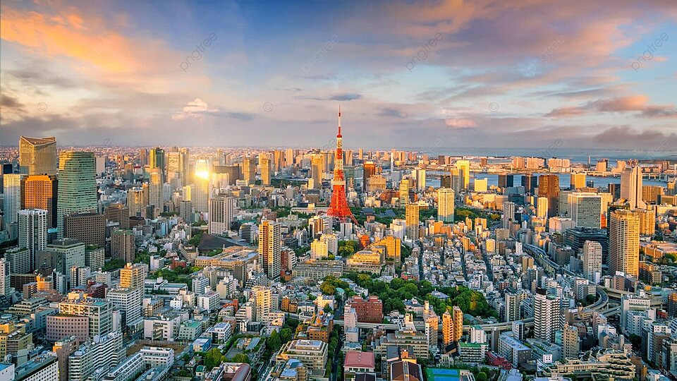
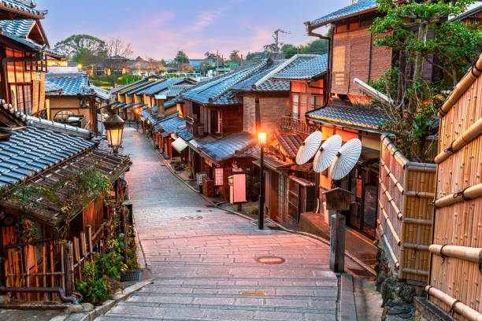
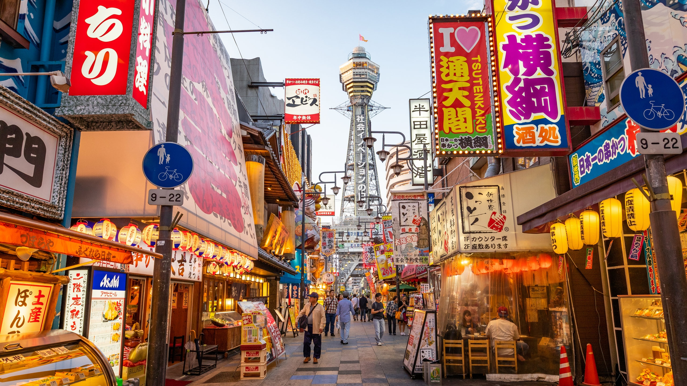
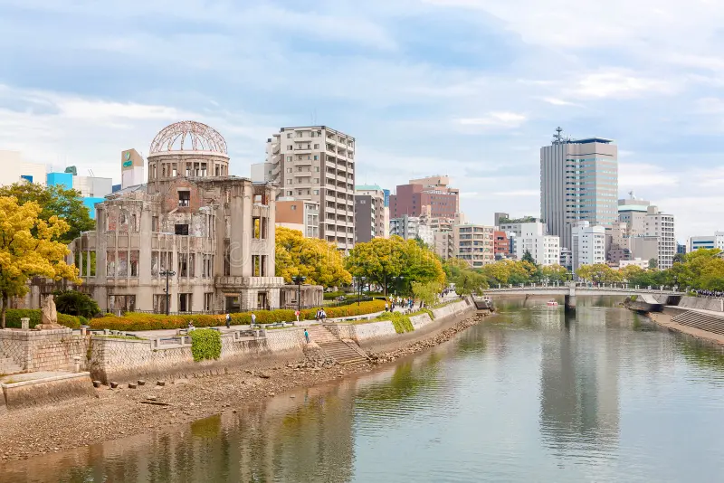
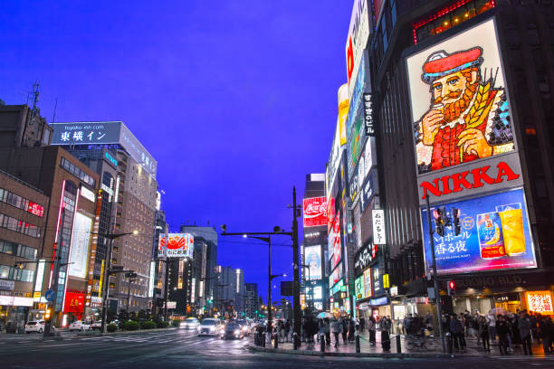
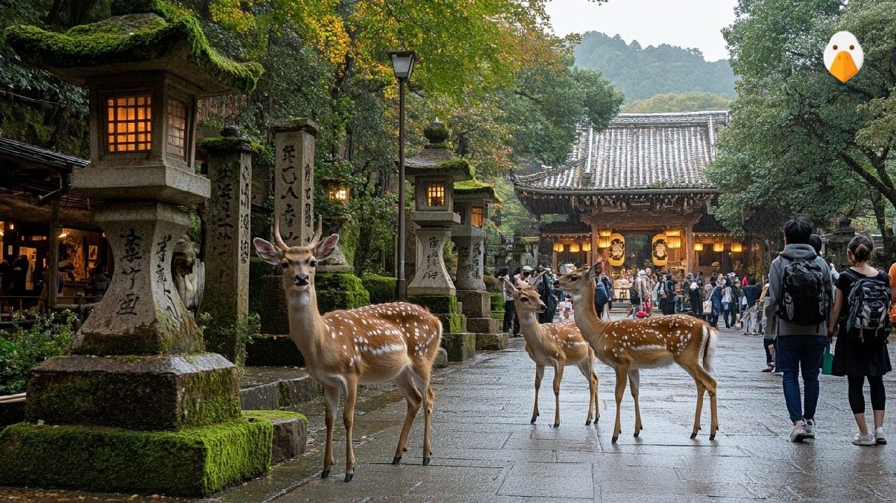
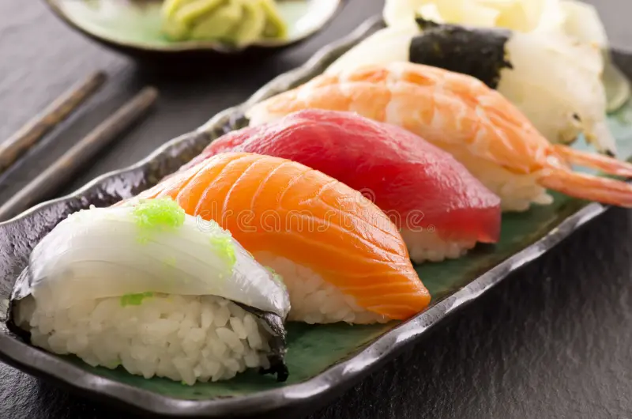
Riso condito con aceto accompagnato da pesce, verdure o altri ingredienti, in diverse forme e preparazioni.
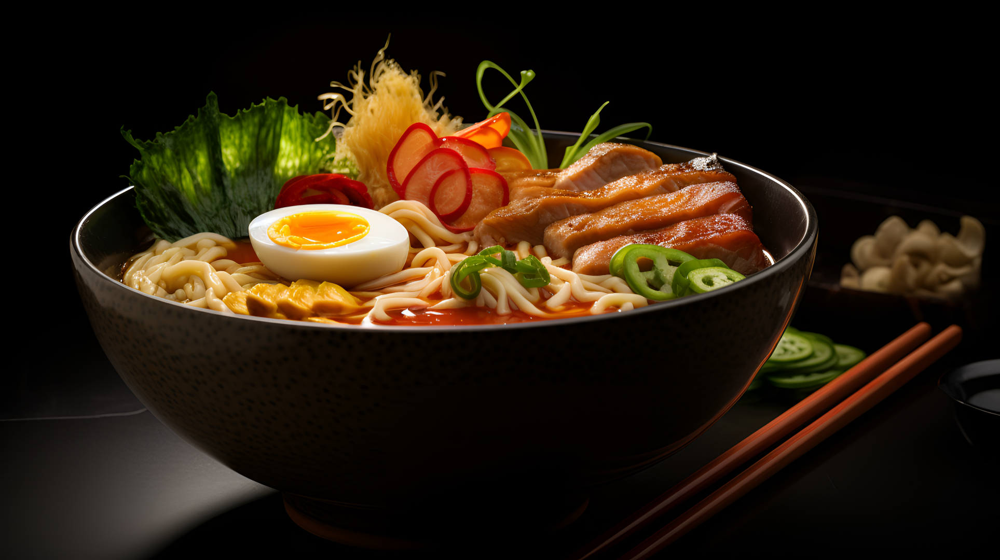
Zuppa di noodles servita in un brodo saporito con guarnizioni come uovo, verdure e carne.
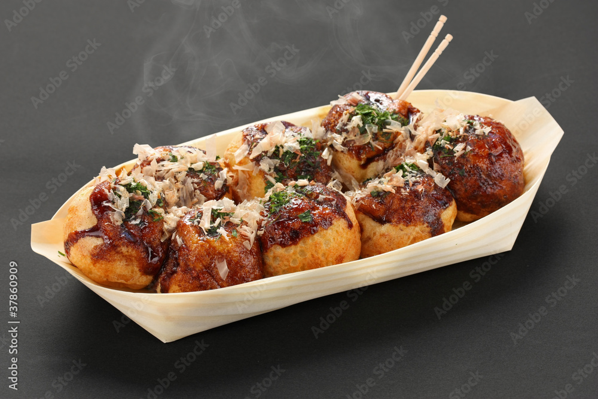
Bocconcini di pastella cotti in uno stampo rotondo e farciti tradizionalmente con polpo.
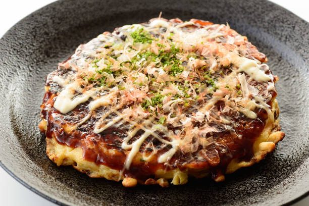
Frittella salata preparata con cavolo e altri ingredienti a scelta; le versioni regionali variano nella composizione.
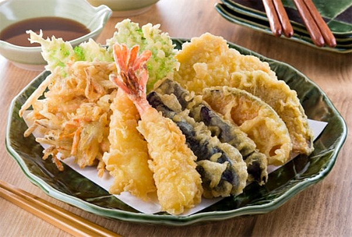
Verdure o pesce avvolti in una pastella leggera e fritti fino a diventare croccanti.
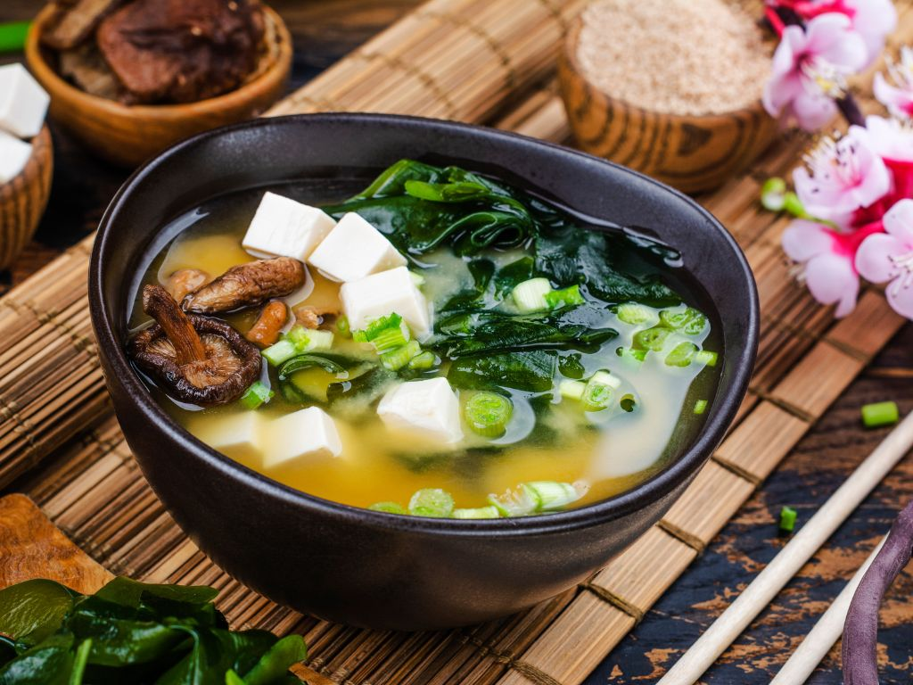
Zuppa preparata con brodo dashi e pasta di miso, spesso arricchita con tofu e alghe.